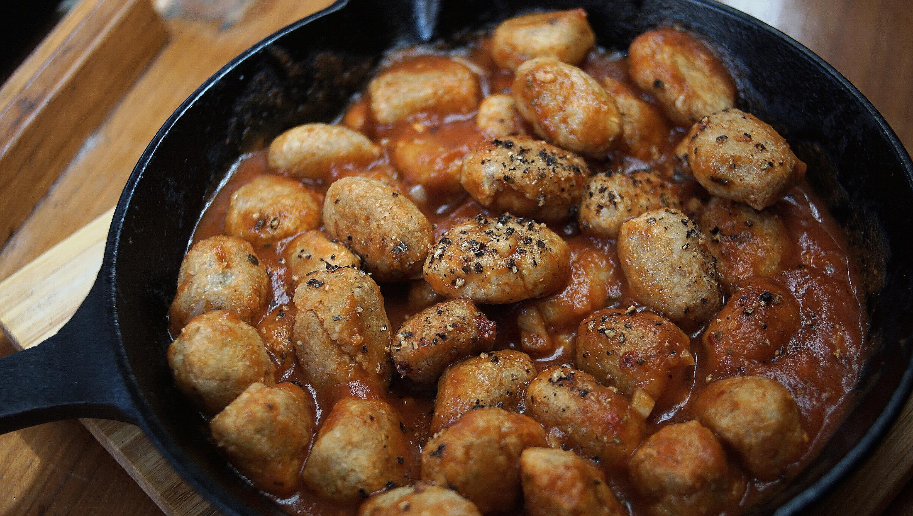

buckwheat dumplings
2 servings — 30 minutes
A recipe for the March 2021 Merveilles Cooking Jam.
Our default buckwheat recipes include Buckwheat Tea and Soba. We like making soba, but it is a long, and messy process. Buckwheat is difficult to work with, especially if the aim is to make 100% soba (most are cut with wheat flour). So this recipe is a way to eat more buckwheat in our diet without defaulting to soba.
Substitutions
Buckwheat: It is possible to use pre-ground flour, I just like to grind my own because it keeps longer as groats. If buying flour, you'll notice a darker and lighter variety, using either is fine. The darker variety has the hull mixed in, and the lighter version doesn't. Hulled buckwheat has more nutrients.
Tomato: tomato paste is a concentrate, it is useful on a boat as it helps save space (instead of carrying larger cans). When using tomato paste, use it with equal parts water. If using whole tomatoes from a can, be sure to crush the tomatoes to help release its juices, and don't add extra water. The cooking time might be longer to help reduce and thicken the liquid. Using fresh tomatoes is another obvious option. Cut, and crush them with a fork in the pan when cooking.
 buckwheat groats1 cup
buckwheat groats1 cup salt2.5 g
salt2.5 g water300 ml
water300 ml olive oil30 ml
olive oil30 ml
dumplings
- In a pan, roast 150 g (1 cup) (to yield 1 cup flour) of buckwheat groats (the de-hulled kind) for 3-5 minutes. Roasting groats in a pan lightly dries them out, and makes them easier to grind them afterwards.
- Transfer 1/4 of the groats in a mortar and pestle, and grind into a fine powder. Repeat for the rest of the groats. We process a small amount at a time because of the size of our mortar.
- Transfer the buckwheat flour into a bowl. Mix in 2.5 g (1/2 tsp) of salt.
- Bring 300 ml (1 1/4 cup) of water to a boil. Pour hot water into flour, and mix until well incorporated.
- Prepare a small bowl with 30 ml (2 tbsp) olive oil (melted vegan butter is also fine), and bring a pan to medium heat. Dip a spoon into the bowl of oil to coat it, and scoop up a chunk of dough. Form the dough with your fingers into a cohesive 'ball' and dump it into the hot pan. Continue until all the dough is used up.
- For extra heat, add more olive oil to the pan, and sauté the dumplings until lightly browned on all sides. Divide cooked dumplings into two bowls.
 yellow onion1, small
yellow onion1, small garlic2 cloves
garlic2 cloves- olive oil15 ml
 tomato paste90 g
tomato paste90 g- water120 ml
- salt1.25 g
 black pepper1.25 g
black pepper1.25 g
sauce
- In a small pan, cook 1 small diced yellow onion, 2 minced garlic cloves in 15 ml (1 tbsp) olive oil over medium heat until the onion is just translucent.
- Add 90 g (1/2 of a 170g can) of tomato paste and 120 ml (1/2 cup) of water (or 1/2 cup of tomato sauce) and mix until it's blended. Add to pan, along with a pinch of dried oregano and some chili pepper flakes. Bring sauce to a simmer over medium-high heat, then lower heat to a simmer and cook for about 15-20 minutes.
- Pour sauce over buckwheat dumplings, and season with salt and black pepper.